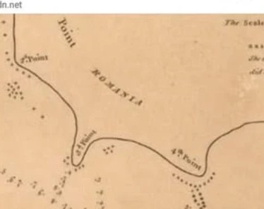

Curatorial note. This is a guest essay by Nineta Bărbulescu — Ambassador of Romania to Malaysia (from January 2021) — and Dan Bărbulescu, whose research in Kuala Lumpur (2021–2022) traced a Romanian toponym across the archival cartography of Southeast Asia. Each chapter links directly to official archives (the National Library Board Singapore and Roots.gov.sg / National Heritage Board), where the maps can be viewed and downloaded in high resolution. It is presented bilingually; use the language selector above for the Romanian edition.Notă curatorială. Acesta este un eseu invitat de Nineta Bărbulescu — Ambasador al României în Malaysia (din ianuarie 2021) — și Dan Bărbulescu, ale cărui cercetări la Kuala Lumpur (2021–2022) au urmărit un toponim românesc de-a lungul cartografiei de arhivă din Asia de Sud-Est. Fiecare capitol trimite direct la arhive oficiale (National Library Board Singapore și Roots.gov.sg / National Heritage Board), unde hărțile pot fi vizualizate și descărcate la înaltă rezoluție. Este prezentat bilingv; folosiți selectorul de limbă de mai sus pentru ediția în română.
Introduction & prefaceIntroducere și prefață
This is not merely a geographical expedition but an exploration through the evolving lens of historical cartography over the last 1,900 years. Each map from a different era offers a glimpse of how European explorers, traders and cartographers perceived, inked and documented one of the great trading routes of Southeast Asia. The essay follows the transition from Cape Malayu-Kolon to Cape Romania in Johor — an eastern Malaysian state beside Singapore — through the key maps that mark this journey. Its conclusions are neither definitive nor exhaustive of the thousands of sailors, traders and occasional conquerors who reached these shores by chance or intention.
Aceasta nu este doar o expediție geografică, ci o explorare prin lentila în continuă schimbare a cartografiei istorice din ultimii 1.900 de ani. Fiecare hartă dintr-o epocă diferită oferă o privire asupra felului în care exploratorii, negustorii și cartografii europeni au perceput, cartografiat și documentat una dintre marile rute comerciale ale Asiei de Sud-Est. Eseul urmărește trecerea de la Capul Malayu-Kolon la Capul România în Johor — un stat din estul Malaysiei, vecin cu Singapore — prin hărțile-cheie care marchează această călătorie. Concluziile sale nu sunt nici definitive, nici nu epuizează poveștile miilor de marinari, negustori și, ocazional, cuceritori care au ajuns pe aceste țărmuri din întâmplare sau cu intenție.
Its purpose is to reflect on the untold, uninked and therefore forgotten journeys of generations of European and Malaysian explorers who wandered between Europe and the Far East, paving the most-travelled routes of our time. It also mirrors the authors’ own journeys far from the country where they were born, and their effort to notice better, learn more and understand peoples from geographically and civilisationally distant lands — and, in the process, to discover unexpected cultural commonalities.
Scopul său este să reflecteze asupra călătoriilor netrăite în scris — și, prin urmare, uitate — ale generațiilor de exploratori europeni și malaezieni care au rătăcit între Europa și Extremul Orient, deschizând rutele cele mai umblate ale timpului nostru. Oglindește totodată propriile călătorii ale autorilor, departe de țara în care s-au născut, și strădania lor de a observa mai bine, de a învăța mai mult și de a înțelege popoare din ținuturi îndepărtate geografic și civilizațional — iar, pe parcurs, de a descoperi comunalități culturale neașteptate.
Samuel Huntington wrote in 1993 of a “clash of civilizations”; Edward W. Said replied in 2001 with a “clash of ignorance.” Against both, the authors argue that the 8.1 billion people on Earth face above all the challenge of not falling into indifference. Where modern education trains us to spot differences, culture — in which there is no right or wrong — can train us to spot similarities in language, ethnicity, tradition and religion. Culture unites people; and so this cartographic journey offers one small, concrete instance of it.
Samuel Huntington scria în 1993 despre o „ciocnire a civilizațiilor”; Edward W. Said i-a răspuns în 2001 cu o „ciocnire a ignoranței”. Împotriva ambelor, autorii susțin că cei 8,1 miliarde de oameni de pe Pământ înfruntă mai presus de toate provocarea de a nu cădea în indiferență. Acolo unde educația modernă ne deprinde să observăm diferențe, cultura — în care nu există corect sau greșit — ne poate deprinde să observăm asemănări în limbă, etnie, tradiție și religie. Cultura unește oamenii; iar această călătorie cartografică oferă un mic exemplu concret al acestui fapt.
1. Ptolemy’s map (150 AD)1. Harta lui Ptolemeu (150 d.Hr.)
The headland’s first appearance in cartography begins with Claudius Ptolemy, the Greco-Egyptian geographer of Alexandria whose 2nd-century Geographia introduced a grid of latitude and longitude and assigned coordinates to over 8,000 places. In Ptolemy’s world, Southeast Asia appears as the Aurea Chersonesus, the Golden Peninsula, and the cape is labelled Malayukolon Prom — the earliest recorded Western mention of this part of the Malay Peninsula, and an early recognition of the Malay ethnonym itself, carried west along the spice routes.
Prima apariție a promontoriului în cartografie începe cu Claudius Ptolemeu, geograful greco-egiptean din Alexandria a cărui Geographia din secolul al II-lea a introdus o rețea de latitudine și longitudine și a atribuit coordonate a peste 8.000 de locuri. În lumea lui Ptolemeu, Asia de Sud-Est apare drept Aurea Chersonesus, Peninsula de Aur, iar capul este numit Malayukolon Prom — cea mai timpurie mențiune occidentală consemnată a acestei părți a Peninsulei Malaeze și o recunoaștere timpurie a însuși etnonimului malaez, purtat spre apus de-a lungul rutelor mirodeniilor.
2. Godinho de Eredia (1613)2. Godinho de Eredia (1613)
The decisive leap came with the Portuguese. Manuel Godinho de Eredia — born in Malacca in 1563 to a Portuguese father and a mother of mixed Portuguese-Malay descent — carried intimate local and hydrographic knowledge of the region. On his 1613 chart of Malacca, direct empirical observation replaces second-hand speculation, and the promontory is inscribed, for the first time in a Western hand, as Ponta de Romania: “ponta” the Portuguese for point or cape, “Romania” from the Latin Romanus. The chart clearly delineates the passage around the southern tip of the peninsula into the South China Sea.
Saltul decisiv a venit odată cu portughezii. Manuel Godinho de Eredia — născut la Malacca în 1563, dintr-un tată portughez și o mamă de descendență mixtă portughezo-malaeză — deținea o cunoaștere locală și hidrografică intimă a regiunii. Pe harta sa a Malaccăi din 1613, observația empirică directă înlocuiește speculația din auzite, iar promontoriul este înscris, pentru întâia oară de o mână occidentală, drept Ponta de Romania: „ponta”, cuvântul portughez pentru vârf sau cap, „Romania”, din latinescul Romanus. Harta delimitează limpede trecerea pe la capătul sudic al peninsulei către Marea Chinei de Sud.
3. The Dutch VOC charts (1633)3. Hărțile companiei olandeze VOC (1633)
In the 17th century the Dutch East India Company (VOC, founded 1602) came to dominate the trade of the region, and its cartographers folded the Portuguese name into Dutch nautical shorthand, rendering Ponta de Romania as Pderomania or Punt Romania. Working with astrolabes, cross-staffs and triangulation, VOC surveyors added the hydrographic detail that mattered to a merchant fleet: depth soundings, shoal markers and anchorages to secure safe passage through the Straits of Malacca.
În secolul al XVII-lea, Compania Olandeză a Indiilor de Est (VOC, întemeiată în 1602) a ajuns să domine comerțul regiunii, iar cartografii ei au strâns numele portughez într-o prescurtare nautică olandeză, redând Ponta de Romania ca Pderomania sau Punt Romania. Lucrând cu astrolaburi, arbalete de navigație și triangulație, topografii VOC au adăugat detaliul hidrografic care conta pentru o flotă comercială: sondaje de adâncime, semne de bancuri de nisip și locuri de ancorare, spre a asigura trecerea sigură prin Strâmtoarea Malacca.
4. British naval charts (1723)4. Hărți navale britanice (1723)
By the early 18th century British hydrographers and the East India Company had standardised their charts for naval and commercial use, adopting the concise English abbreviation Pt Romania (Point Romania). These charts prized functional clarity over artistry: precise latitude and longitude, tide tables and detailed soundings to guide ships around the reefs and shoals at the eastern entrance of the Singapore Strait.
Până la începutul secolului al XVIII-lea, hidrografii britanici și Compania Indiilor de Est își standardizaseră hărțile pentru uz naval și comercial, adoptând prescurtarea concisă englezească Pt Romania (Point Romania). Aceste hărți prețuiau claritatea funcțională în locul artei: latitudine și longitudine precise, tabele de maree și sondaje amănunțite spre a călăuzi corăbiile printre recife și bancuri la intrarea estică a Strâmtorii Singapore.
5. The French Les Indes Orientales (1751)5. Franceza Les Indes Orientales (1751)
In the mid-18th century French royal cartography joined scientific rigour to artistic elegance. Jacques-Nicolas Bellin, hydrographer to the French crown, standardised the cape as C. Romania (Cap Romania) on his reduced chart of the Straits of Malacca and Singapore, pairing detailed coastal soundings with the fine engraving that placed the name firmly in the international cartographic record.
La mijlocul secolului al XVIII-lea, cartografia regală franceză a îmbinat rigoarea științifică cu eleganța artistică. Jacques-Nicolas Bellin, hidrograf al coroanei franceze, a standardizat capul drept C. Romania (Cap Romania) pe harta sa redusă a strâmtorilor Malacca și Singapore, alăturând sondaje de coastă amănunțite gravurii fine care a fixat numele în consemnarea cartografică internațională.
6. D’Anville’s comparative map (1794)6. Harta comparativă a lui d’Anville (1794)
Jean-Baptiste Bourguignon d’Anville, among the foremost French geographers of the late 18th century, made maps that synthesised centuries of historical and empirical geography. His 1794 chart explicitly stages the toponymic transition — from the ancient Malaeucolon / Magnus Prom to the modern Malaka and Romania Pt. Here the cape is also a navigational hazard: near Pedra Branca, large iron deposits in the seabed disturbed shipboard compasses, so 18th-century mariners relied on magnetic-declination charts, multiple compasses and dead reckoning, and celestial fixes with the sextant to round the point safely.
Jean-Baptiste Bourguignon d’Anville, printre cei mai de seamă geografi francezi ai sfârșitului de secol XVIII, a făcut hărți care au sintetizat secole de geografie istorică și empirică. Harta sa din 1794 pune în scenă explicit tranziția toponimică — de la anticele Malaeucolon / Magnus Prom la modernele Malaka și Romania Pt. Aici capul este și un pericol de navigație: în apropiere de Pedra Branca, mari zăcăminte de fier din fundul mării tulburau busolele de la bord, așa că marinarii secolului XVIII se bazau pe hărți de declinație magnetică, pe busole multiple și pe estimare, precum și pe fixarea poziției cu sextantul, spre a ocoli capul în siguranță.
7. Roman toponyms, the name “Romania,” and Teluk Ramunia7. Toponime romane, numele „România” și Teluk Ramunia
Latin-derived geographical names spread across Asia, Africa and Europe, and terms such as Magnus Promontorium persisted in cartographic literature for centuries. The modern nation of Romania takes its name from the Latin romanus, tracing its language to Roman Dacia (conquered by Trajan in 106 AD): 16th-century Italian humanists recorded locals calling their speech românește, and the oldest surviving Romanian document, the Letter of Neacșu (1521), names Wallachia as Țara Rumânească. Wallachia and Moldavia united in 1859 and adopted the name Romania in 1862, with independence recognised in 1878.
Numele geografice de origine latină s-au răspândit în Asia, Africa și Europa, iar termeni precum Magnus Promontorium au dăinuit în literatura cartografică secole de-a rândul. Națiunea modernă România își ia numele din latinescul romanus, urmându-și limba până la Dacia romană (cucerită de Traian în 106 d.Hr.): umaniști italieni din secolul XVI au consemnat că localnicii își numeau graiul românește, iar cel mai vechi document păstrat în limba română, Scrisoarea lui Neacșu (1521), numește Țara Românească Țara Rumânească. Țara Românească și Moldova s-au unit în 1859 și au adoptat numele România în 1862, independența fiind recunoscută în 1878.
Beside the European names runs a local one: Teluk Ramunia in Johor, whose name local tradition attributes to the ramunia tree that once grew abundantly along the bay. The European Ponta de Romania on the 16th-century maps predates the written record of that flora story — a reminder that indigenous and maritime place-naming ran on parallel tracks, and that a single coast may hold two overlapping memories at once.
Alături de numele europene curge unul local: Teluk Ramunia în Johor, al cărui nume tradiția locală îl atribuie arborelui ramunia care creștea cândva din belșug de-a lungul golfului. Europeanul Ponta de Romania de pe hărțile secolului XVI precedă consemnarea scrisă a acelei povești despre floră — o amintire că denumirea locurilor de către localnici și de către navigatori a mers pe căi paralele, și că un singur țărm poate purta deodată două memorii suprapuse.
The double memory survives to this day: the cape is Teluk Ramunia on today’s Malaysian maps, yet it is still Romania Point on the Singaporean side — the four-hundred-year-old European name holding fast on one shore while the local name governs the other.
Memoria dublă supraviețuiește până astăzi: capul este Teluk Ramunia pe hărțile malaeziene de azi, dar rămâne Romania Point pe partea singaporeză — numele european, vechi de patru sute de ani, ținând ferm pe un țărm, în vreme ce numele local cârmuiește celălalt.

Timeline of the toponymCronologia toponimului
| EraEpocă | Mapmaker / sourceCartograf / sursă | Inscribed nameNume înscris | SignificanceSemnificație |
|---|---|---|---|
| 150 AD | Claudius Ptolemy | Malayukolon Prom | Earliest Western record of the Malay headland.Cea mai timpurie consemnare occidentală a promontoriului malaez. |
| 1613 | Godinho de Eredia | Ponta de Romania | First European naming of the cape (Portuguese).Prima denumire europeană a capului (portugheză). |
| 1633 | Dutch VOC chartsHărți VOC olandeze | Pderomania | Dutch maritime adaptation with hydrography.Adaptare maritimă olandeză, cu hidrografie. |
| 1723 | British naval chartsHărți navale britanice | Pt Romania | British standardisation with depth soundings.Standardizare britanică, cu sondaje de adâncime. |
| 1751 | Jacques-Nicolas Bellin | C. Romania | French cartographic standardisation (Cap Romania).Standardizare cartografică franceză (Cap Romania). |
| 1794 | J.-B. B. d’Anville | Romania Pt. | Comparative map linking ancient to modern names.Hartă comparativă ce leagă numele antice de cele moderne. |
ConclusionConcluzie
Across nineteen centuries a single Johor headland is perceived, inked and renamed — Greek, Portuguese, Dutch, British, French — each hand leaving its accent on the same rock: Malayukolon, Ponta de Romania, Pderomania, Pt Romania, C. Romania. The maps record trade, empire and navigation; but read together they record something gentler too — the long, accidental braiding of European and Malay worlds, and a Romanian name resting, for four hundred years, on a Southeast Asian shore. Culture unites people; the cape is its quiet, cartographic proof.
De-a lungul a nouăsprezece secole, un singur promontoriu din Johor este perceput, cartografiat și redenumit — grecesc, portughez, olandez, britanic, francez — fiecare mână lăsându-și accentul pe aceeași stâncă: Malayukolon, Ponta de Romania, Pderomania, Pt Romania, C. Romania. Hărțile consemnează comerțul, imperiul și navigația; dar citite laolaltă consemnează și ceva mai blând — îngemănarea lungă și întâmplătoare a lumilor europeană și malaeză, și un nume românesc odihnindu-se, vreme de patru sute de ani, pe un țărm din Asia de Sud-Est. Cultura unește oamenii; capul este dovada ei tăcută, cartografică.
Notes & sourcesNote și surse
- Authors & context. Nineta Bărbulescu (Ambassador of Romania to Malaysia, from January 2021) and Dan Bărbulescu; research conducted in Kuala Lumpur, 2021–2022, in cooperation with Universiti Pendidikan Sultan Idris.Autori și context. Nineta Bărbulescu (Ambasador al României în Malaysia, din ianuarie 2021) și Dan Bărbulescu; cercetare realizată la Kuala Lumpur, 2021–2022, în cooperare cu Universiti Pendidikan Sultan Idris.
- Archives. Map images and metadata: the National Library Board Singapore and Roots (National Heritage Board). Rights to each map remain with the holding institution.Arhive. Imagini de hărți și metadate: National Library Board Singapore și Roots (National Heritage Board). Drepturile asupra fiecărei hărți rămân la instituția deținătoare.
- Frames of reference. S. P. Huntington, “The Clash of Civilizations?” (1993); E. W. Said, “The Clash of Ignorance” (2001).Cadre de referință. S. P. Huntington, „The Clash of Civilizations?” (1993); E. W. Said, „The Clash of Ignorance” (2001).